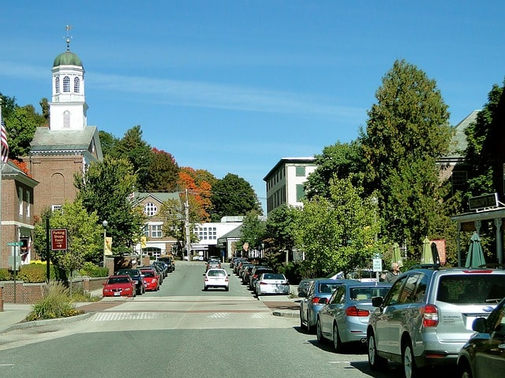
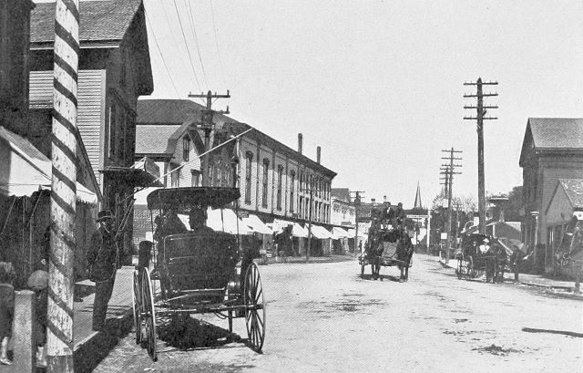
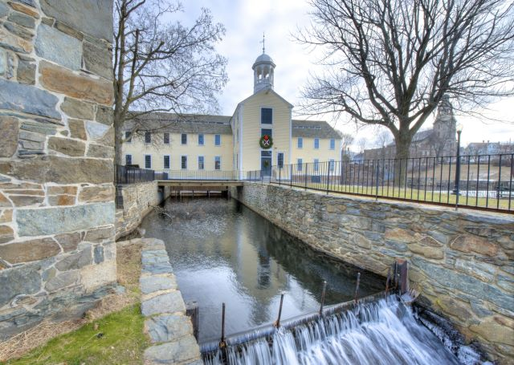
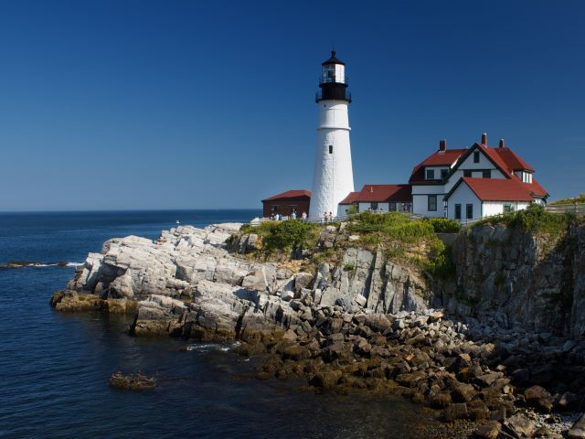

Entrance to shops and parking on New Main street.

Old main street in 1903.
Historic Center of Thitherham.

Thitherham mill where our famous flour is ground.

The lobster business is alive and well in Thitherham, and the Old Lighthouse leads our fishermen safely back to harbor.
Statistics about Thitherham
Most of the local economy has been based on flour since the mid 19th century.
The coastline is also a big attraction for the town. Thitherham is a major source of seafood.
Thitherham is home to 300,000 people. Mostly middle to upper-middle class.
1/3 of the local revenue comes from the seafood and wheat industries.
The town numbers swell in the summer time to excess of 500,000 thanks to ours turists and summer residents.